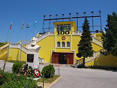
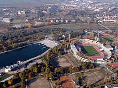
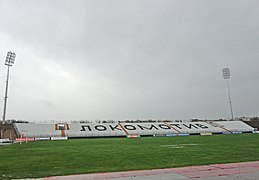
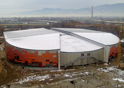
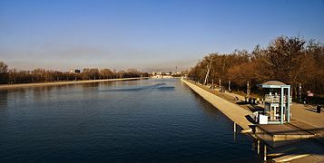
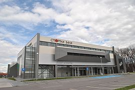

Спорт и спортни съоражения
В Пловдив е построен най-големият спортен център в България – спортен комплекс „Пловдив“. Разположен в северозападната част на града, комплексът включва стадион за 55 000 зрители, най-голямата гребна база на Балканите, закрит плувен басейн, открити и закрити тенискортове и лекоатлетическа писта.
Пловдив разполага с най-голямата гребна база на Балканите, където всяко лято се провеждат състезания по гребане. Тя се намира до парк „Отдих и култура“ в северозападната част на града и представлява канал с дължина: 2200 m, широк 120 m и дълбок 3 m. През 2011 г. е извършен ремонт на стойност 1,6 млн. лева включващ обновяване на хангарите и съблекалните, както и изграждане на нова трибуна за 800 зрители. Пловдив е домакин на редица европейски и световни първенства по гребане за мъже и жени.
През август 2015 г. е открита новата мултифункционална спортна „Колодрума“. Спортното съоръжение изпълнява функцията на покрит колодрум, спортна зала, концертна зала и място за множество социални прояви и мероприятия. Изградено е на мястото на бившия открит колодрум в града под тепетата и към момента е единственият покрит колодрум в България и един от най-модерните на Балканите. Максималния капацитет на залата е 7530 зрители.
Други по-значими спортни съоръжения и атракциони в Пловдив са стадион „Христо Ботев“, стадион „Локомотив“ с картинг-писта „Лаута“, стадион „Марица“, стадион „Тодор Диев“, хандбална зала „Локомотив“, спортните зали „Дунав“, „Строител“, „Чайка“, „Академик“, „Total Sport“, Комплекс С.И.²Л.А., водния комплекс Акваленд.
Пловдив е сред най-футболните градове в България с 4 отбора в професионалния футбол – „Ботев“ (основан 1912 г.), „Марица“ (основан 1921 г.), „Локомотив“ (основан 1926 г.) и „Спартак“ (основан 1947 г.).
Международният боксов турнир „Странджа“ се провежда ежегодно в Пловдив от 1949 г. В изданието за 2007 г. в турнира взимат участие 96 боксьори от 20 страни. Край Пловдив са разположени клубове по конен спорт „Аркан“ и конно-спортна база „Хан Крум“.
В националната баскетболна лига участва най-новия баскетболен отбор БК Академик Бултекс, който играе мачовете в Зала Строител.
В българското волейболно първенство участват отборите на „Локомотив“ и „Виктория волей“ (мъже) и „Марица“ (жени). Членове на Българска федерация по баскетбол от Пловдив са клубовете: „Марица“, „Марица 1991“, „Марица Кършияка“, „Академик“ и „Академик-жени“.






Начална страница